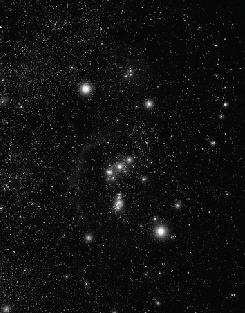

Ya 25 Aralık’ta bu çizginin güneşin doğacağı yeri gösterdiği iddiası?Bu da pek doğru değildir. Çünkü Kuzey Yarımküre’de, Orion takımyıldızı 25 Aralık’ta güneş battıktan sonra ufuk çizgisinden yukarı çıkar. Buna göre Orion ve Sirius ufuk çizgisini geçtiklerinde işaret ettikleri yer pusulada 112 derece noktasıdır (Doğu-Güneydoğu) ve bu nokta güneşin doğduğu nokta değildir. Bu kadarla bitmiyor, “Orion’un kemeri ve Sirius, güneşin doğacağı noktaya işaret ediyor” demek pek bir anlam ifade etmez; zira dünya döndükçe Orion’un kemeri ve Sirius’un işaret ettiği nokta sürekli kaymaya devam eder. Yani gece boyunca mutlaka ertesi gün güneşin doğacağı yeri işaret ediyor olabilir; ama aynı zamanda gece boyunca birçok başka yere de işaret ederler. ”Üç Kral” olarak adlandırılan Orion’un kemeri, aynı zamanda üç kızkardeş olarak da bilinir; ancak problem bu tanımlamanın 1600’lere kadar tarihi kaynaklar da görülmemesidir.
Bakire (Virgin) Meryem, Başak (Virgo) burcundan gelir. Başak “Virgo the Virgin” olarak da bilinir. Virgo (Başak), Latince’de bakire demektir. Başak aynı zamanda “Ekmek Evi” olarak da bilinir ve Başak, elinde bir demet buğday tutan bir bakire olarak tasvir edilir. “Ekmek Evi” ve sembolü olan buğday, hasat mevsimi olan Ağustos ve Eylül aylarını temsil eder. Ayrıca Beytüllahim’in tam tercümesi, “Ekmek Evi”dir. Bu yüzden aslında Beytüllahim; dünyadaki bir yeri değil, gökyüzündeki bir yeri yani Başak burcu takımyıldızını temsil eder.
Virgo Latincede bakire, Beytüllahim de İbranicede ekmek evi manasına gelir. Filmde gösterilen Başak burcunun sembolü de doğru, en sondaki bacağı tekrar uzatılmış bir M harfine benzemektedir. Başak burcunun bir sembolü de elinde buğday başakları tutan bir genç kızdır.